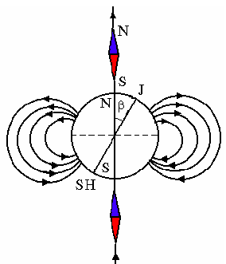
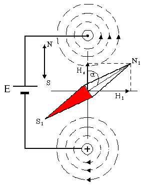
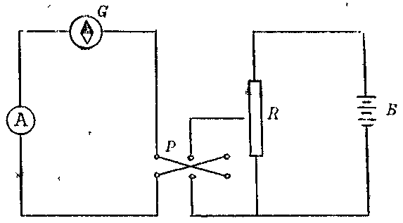

Yer magnit maydoni kuçlanganligining gorizontal taşkil etuvçisini aniqlaş
1Işning maqsadi va kutilayotgan natijalar
Tangens-galvanometr yordamida Yer magnit maydoni kuçlanganligining gorizontal taşkil etuvçisi \(H_e\) ni aniqlaş.
Fan dasturidagi ta’lim natijalari: TN2 — Fizik hodisalarni tajribada namoyiş qiliş, ölçov işlarini bajariş va natijalar aniqligini ta’minlaş; TN5 — Ölçaş natijalarini matematik va grafik qayta işlaş, tizimli va tasodifiy xatoliklarni hisoblaş; TN13 — Tajriba qurilmalarini işçi holatga keltiriş, kalibrlaş va ölçov xatoliklarini kamaytiriş; TN15 — Ölçaşlarning absolyut, nisbiy xatoliklari va statistik noaniqliklarni hisoblaş.
2Kerakli jihozlar
- Tangens-galvanometr (radiusi \(r\) va öramlar soni \(N\) ma’lum yassi vertikal ğaltak, markazida kompas)
- Ampermetr (milliampermetr)
- Reostat
- Özgarmas tok manbai
- Kalit va tok yönalişini özgartiruvçi kommutator (pereklyuçatel)
- Ulaş simlari
3Nazariy qism
12.1. Yerning magnit maydoni
Yerni qutblari geografik qutblar yaqinida joylaşgan katta magnit deb qaraş mumkin: şimoliy geografik qutb yaqinida janubiy magnit qutb \(S\), janubiy geografik qutb yaqinida esa şimoliy magnit qutb \(N\) joylaşgan (12.1-rasm). Birinçi yaqinlaşişda Yer maydoni uning markazidagi magnit dipol maydoniga mos keladi. Zamonaviy tasavvurlarga köra, Yer maydoni asosan suyuq yadrodagi aylanma toklar (geodinamo), qisman radiatsion poyaslardagi toklar va toğ jinslarining magnitlanişi bilan hosil böladi.
Yer maydoni kuçlanganligining gorizontal tekislikdagi proyeksiyasi gorizontal taşkil etuvçi \(H_e\) deyiladi; uning yönalişi magnit meridiani yönalişi, u orqali ötuvçi vertikal tekislik esa magnit meridian tekisligi deb qabul qilingan. Yer maydoni yönalişi bilan gorizontal tekislik orasidagi burçak qiyalaniş (inklinatsiya), geografik va magnit meridianlar orasidagi burçak oğiş (deklinatsiya) burçagi deyiladi.

12.2. Tangens-galvanometr
Faqat vertikal öq atrofida aylana oladigan magnit strelka gorizontal tekislikda faqat \(H_e\) ta’sirida buriladi — tangens-galvanometr şunga asoslangan. U \(N\) öramli, radiusi \(r\) bölgan yassi vertikal ğaltakdan iborat; ğaltak markazidagi gorizontal tekislikda kompas joylaşgan. Tok bölmaganda strelka magnit meridiani \(NS\) böylab turadi. Ğaltakni vertikal öq atrofida burib, uning tekisligi magnit meridiani tekisligi bilan ustma-ust tuşiriladi.
Ğaltakdan tok ötganda strelka \(\alpha\) burçakka buriladi. Unga ikki maydon ta’sir qiladi: Yer maydonining gorizontal taşkil etuvçisi \(H_e\) va tokning maydoni \(H\) (öram tekisligiga tik). Strelka ikki maydonning teng ta’sir etuvçisi böylab joylaşadi (12.2-rasm), şuning uçun:
$$\operatorname{tg}\alpha=\frac{H}{H_e},\qquad H_e=\frac{H}{\operatorname{tg}\alpha}.\qquad(12.1)$$Aylanma tok markazidagi maydon kuçlanganligi Bio–Savar–Laplas qonuniga köra:
$$H=\frac{IN}{2r},\qquad(12.2)$$bu yerda \(I\) — tok (A), \(r\) — öram radiusi (m), \(N\) — öramlar soni. (12.1) va (12.2) dan:
$$H_e=\frac{IN}{2r\,\operatorname{tg}\alpha}.\qquad(12.3)$$Induksiya: \(B_e=\mu_0H_e\). Özbekistonda \(B_e\approx27\)–28 mkTl (\(H_e\approx22\) A/m).


4Işni bajariş tartibi
- 12.3-rasmda körsatilgan sxemani yiğing.
- Tangens-galvanometr va kompasni şunday burangki, ğaltak tekisligi magnit meridiani böylab joylaşsin va strelkaning bir uçi şkala noliga töğri kelsin. Yaqinda temir buyumlar bölmasin.
- Tangens-galvanometrning öramlar soni \(N\) va radiusi \(r\) ni aniqlang (asbobda körsatilgan).
- Reostat dastasini tok taxminan 0,5 A böladigan holatga qöyib, zanjirni ulang va ampermetr körsatişini yozing.
- Strelka muvozanatga kelgaç, oğiş burçagi \(\alpha_1\) ni yozing.
- Tok kattaligini özgartirmasdan, kommutator bilan uning yönalişini özgartiring va oğiş burçagi \(\alpha_2\) ni yozing. Örtaça burçak: \(\alpha=(\alpha_1+\alpha_2)/2\).
- Tajribani tokning turli qiymatlari (0,5–0,7 A; 1–1,2 A; 1,5–1,7 A) uçun kamida uç marta takrorlang; tok reostat bilan özgartiriladi.
- \(\operatorname{tg}\alpha\) va \(I\) qiymatlarini (12.3) formulaga qöyib, \(H_e\) ni toping; natijalarni jadvalga yozing.
12.1-jadval. Hₑ ni aniqlaş
| № | I, A | α₁, ° | α₂, ° | α, ° | tg α | Hₑ, A/m | ΔHₑ, A/m | ΔHₑ/Hₑ, % |
|---|---|---|---|---|---|---|---|---|
Jadval katakçalariga bevosita yoziş mumkin (ma’lumotlar sahifa yopilganda saqlanmaydi — hisobotga köçirib oling).
5Natijalarni qayta işlaş va xatoliklar
Har bir ölçaş uçun \(H_e=IN/(2r\operatorname{tg}\alpha)\), söng örtaça \(\overline{H_e}\), absolyut va nisbiy xatoliklar topiladi. Burçak xatoligining ta’siri: \(\dfrac{\Delta H_e}{H_e}=\dfrac{\Delta I}{I}+\dfrac{\Delta r}{r}+\dfrac{2\Delta\alpha}{\sin2\alpha}\) — u \(\alpha\approx45^\circ\) da eng kiçik, şuning uçun tokni burçak 30°–60° oraliğida böladigan qilib tanlang.
Yana bir usul: \(\operatorname{tg}\alpha\) ni \(I\) ga boğliq çizing — qiyalik \(k=N/(2rH_e)\), bundan \(H_e=N/(2rk)\). Induksiyaga ötiş: \(B_e=\mu_0H_e\).
Xatoliklar nazariyasi: laboratoriyaga kiriş bölimi.
Takroriy ölçaşlar kalkulyatori
Eng kiçik kvadratlar usuli (töğri çiziq y = kx + b)
6Namunaviy hisob
Şart. \(N=10\), \(R=10\) sm, \(I=0{,}20\) A, örtaça oğiş \(\varphi=24{,}5^\circ\). \(B_H\) va \(H_H\) ni toping. Burçak 1° xato ölçansa, nisbiy xatolik qança?
Yeçimni körsatiş
\(B_c=4\pi\cdot10^{-7}\cdot10\cdot0{,}2/0{,}2=12{,}6\) mkTl. \(B_H=12{,}6/\operatorname{tg}24{,}5^\circ=12{,}6/0{,}456=27{,}6\) mkTl; \(H_H=22\) A/m. \(\delta=2\cdot0{,}0175/\sin49^\circ=0{,}046\) — 4,6 %. Tokni 0,4 A ga oşirib, \(\varphi\approx42^\circ\) da ölçasak, xatolik 3,5 % gaça kamayadi.
7Virtual laboratoriya: Yer maydonining gorizontal taşkil etuvçisi
- Tangens-galvanometr halqasi magnit meridianida. 0,2 amper tokda strelka 24,5 gradusga oğdi. Bundan Yer maydonining gorizontal taşkil etuvçisi 27,6 mikrotesla.
- Tokni oşirib, oğişni 45 gradusga yaqinlaştiramiz. Bu burçakda ölçaş xatoligi eng kiçik.
- Öramlar sonini yarmiga kamaytiramiz. Oğiş tangensi ham yarmiga kamaydi.
- Namoyiş tugadi. Endi parametrlarni özingiz özgartirib, natijalarni jadvalga yozing.
Virtual laboratoriyadagi topşiriqlar
- Tokni oşirib, oğiş 45° böladigan qiymatni toping va \(B_H\) ni hisoblang.
- Öramlar sonini 2 dan 10 ga özgartirib, \(\operatorname{tg}\varphi\) ning \(N\) ga proporsionalligini tekşiring.
- Kompasga yaqin temir buyumning ta’sirini \(B_H\) özgarişi orqali köring.
Model öquv maqsadida soddalaştirilgan. “Asbob körsatişi” deb belgilangan qiymatlarga real ölçaşdagi kabi kiçik tasodifiy çetlaniş qöşilgan — takroriy ölçaşlar uçun foydalaning.
8Texnika xavfsizligi
- Iş stolidan temir buyumlar, telefon va magnitlarni olib qöying.
- Tok uzoq ötsa halqa qiziydi.
- Kommutatorni tok kam bölganda almaştiring.
9Himoya uçun nazorat savollari
- Yer magnit maydonining asosiy elementlari (oğiş va qiyalaniş burçaklari) nima?
- Yer magnit maydonining gorizontal taşkil etuvçisi deb nimaga aytiladi?
- Tangens-galvanometrning tuzilişi va işlaş prinsipini tuşuntiring.
- Tangens-galvanometr ğaltagining tekisligi nima uçun magnit meridiani böylab joylaştiriladi?
- Tok yönalişini özgartirib, oğiş burçagining örtaça qiymati nima uçun olinadi?
- Hₑ ni hisoblaş formulasini keltirib çiqaring.
Blits-sörov
- Magnit maydonida magnit strelkasi qanday joylaşadi?
- Bio–Savar–Laplas qonunini aytib bering.
- α₁ va α₂ burçaklarni qanday aniqlaş mumkin?
- Aylanma tok markazida magnit maydon kuçlanganligi nimaga teng?
- SI sistemasida tok kuçi va magnit maydon kuçlanganligining ölçov birliklari qanday?
10Nazorat testi (10 savol, öz-özini tekşiriş)
1. Tangens-galvanometrda \(\operatorname{tg}\varphi\) =
2. \(B_c=B_H\) bölsa, oğiş burçagi:
3. Burçak ölçaşdagi xatolik eng kam ta’sir qiladigan burçak:
4. Özbekistonda Yer maydonining gorizontal taşkil etuvçisi taxminan:
5. Halqa markazidagi maydon \(N=5\), \(I=0{,}5\) A, \(R=0{,}1\) m:
6. Tok 2 marta oşirilsa, \(\operatorname{tg}\varphi\):
7. Kuçlanganlik \(H\) va induksiya \(B\) vakuumda qanday boğlangan?
8. Tok yönalişini almaştirib ölçaş nimani tuzatadi?
9. Inklinatsiya (oğiş) burçagi nima?
10. Yaqindagi temir buyum ölçaşga qanday ta’sir qiladi?
Bu test öz-özini tekşiriş uçun; rasmiy oraliq nazorat HEMIS’da ötkaziladi.
11Sun’iy intellekt bilan işlaş
Men pedagogika oliygohining fizika yönalişi talabasiman. “Yer magnit maydoni kuçlanganligining gorizontal taşkil etuvçisini aniqlaş” laboratoriya işini bajardim. 1) Mening ölçaş jadvalimni tekşir: birliklar, xonalar soni, aniq xato yozuvlar. 2) Natijani qayta işlaş bosqiçlarini tuşuntir (örtaça, Styudent usuli, bilvosita ölçaş xatoligi), lekin hisobni özim bajaraman. 3) Natijam jadval qiymatidan farq qilsa, mumkin bölgan tizimli xatolik manbalarini sanab ber. 4) Himoya uçun 3 ta savol ber. Çeklov: formulalarni LaTeX’da yoz, işonçing komil bölmagan joyni oçiq ayt. [Şu yerga ölçaş jadvalingizni qöying]
12Adabiyotlar
- [2] Toşxonova J.A. va boşq. Fizikadan praktikum. Elektr va magnetizm. — Toşkent, 2006.
- [5] Nurmatov N. Elektr va magnetizm fanidan praktikum. — 2021.
- [4] Eşboltayev I. va boşq. Umumiy fizikadan laboratoriya maşğulotlari. — 2023.
- Halliday D., Resnick R., Walker J. Fundamentals of Physics. 12th ed. — Hoboken: Wiley, 2021.
- Taylor J.R. An Introduction to Error Analysis. 2nd ed. — Sausalito: University Science Books, 1997.
[1]–[5] — fan dasturidagi asosiy, [Q…] — qöşimça adabiyotlar raqamlanişi. Xalqaro darsliklar çuqurlaştiriş uçun tavsiya etiladi.
Öqituvçi uçun: 80 daqiqalik maşğulot rejasi
| Vaqt | Bosqiç | Faoliyat |
|---|---|---|
| 0–10 | Kiriş nazorati (dopusk) | Himoya savollaridan 2–3 tasi; xavfsizlik böyiça yöriqnoma; jurnalga qayd |
| 10–25 | Yiğiş va sozlaş | Zanjir/qurilmani yiğiş, öqituvçi tekşiruvi; jihoz yetişmasa — virtual laboratoriya |
| 25–55 | Ölçaş | Jadvalni töldiriş, takroriy ölçaşlar; virtual model bilan soliştiriş |
| 55–70 | Qayta işlaş | Grafik, eng kiçik kvadratlar, xatoliklar; kalkulyatorlar bilan tekşiriş |
| 70–80 | Himoya | Xulosa, nazorat savollari; DF bali (JN tarkibida) |
Maşğulot: L17–L18 (fan dasturi böyiça). Batafsil: öqituvçi qöllanmasi.